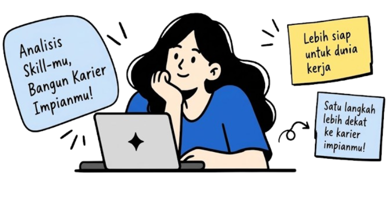

Frontend Developer
78% — Skor Keseluruhan
Kamu mempunyai kemampuan yang kuat di bidang frontend developer.
Kemampuan unggul
- HTML
- JavaScript
- Git
- React
- UI/UX
Pengembangan Kemampuan
- TypeScript
- Next.js
- Testing
- System Design
- State Mange

 Adelya
Mahasiswa
Adelya
Mahasiswa
Siap menganalisis project baru hari ini?
+ Mulai analisa baru Lihat panduan

78% — Skor Keseluruhan
Kamu mempunyai kemampuan yang kuat di bidang frontend developer.
Tingkatkan pemahaman TypeScript untuk memperkuat dasar frontend.
Bangun project nyata menggunakan Next.js untuk pengalaman hands-on.
Kerjakan latihan soal dan simulasi interview frontend developer.
Belum ada riwayat analisis terbaru.